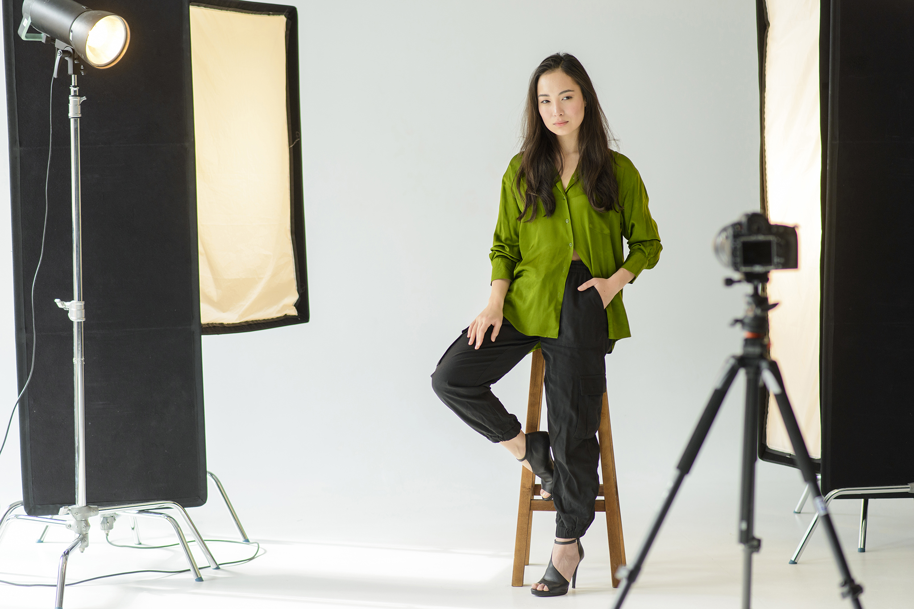

Rólam

Kovács Kati vagyok, profi fotográfus.
Már kisgyermekként is lenyűgözve néztem a nagyszüleim szekrényében talált régi, elsőre furcsának tűnő fényképeket, ahol ismeretlen arcok és dolgok néztek vissza rám. Időutazás a múltba - így képzeltem kislányként, és a régi képek egyszerűen lehengerlően hatottak rám.
A fotográfia szeretetét még inkább fokozta, amikor tizenévesen megkaptam első kamerámat, amellyel felfedezhettem a környező utcák rejtett zugait. Ekkor döbbentem rá, hogy ez lesz életem célja: megmutatni a rejtőzködőt, az emberekben és dolgokban lévő rejtett kincseket.
A gimnáziumi éveim után a Budapesti Metropolitan Egyetem fotográfia szakára jelentkeztem, majd kitűnő tanulmányi eredménnyel megszereztem belőle mesterdiplomámat is. Az egyetem során számos projektmunkán vettem részt a gyakorlati helyeimen, a fotográfia számos területén kipróválva magamat. Jelenleg Budapest belvárosában dolgozok kis csapatottam egy általunk berendezett stúdióban.
Hitvallásomnak tartom, hogy az életben rengeteg gyönyörű dologgal találkozunk, még akkor is, ha sokszor nem vesszük észre őket a hétköznapok forgatagában. Habár ezek a dolgok eléggé illékonynak tűnnek, az én munkám az, hogy megfoghatóvá és örökérvényűvé tegyek őket, madj aztán átnyújtsam nektek. Akár hétköznapi apróságok, akár fontos események, szeretném átadni nektek azt az érzést, amit én is éreztem a fényképeket nézegetve anno, kislányként ücsörögve a nagyszüleim kikopott szőnyegén.
Egyik kedvenc idézetem Borzák Tibortól származik:
Ha a fiók mélyéről előkerülnek a megsárgult fotográfiák,
az albumba rendezett felvételek, máris sorjáznak
a hozzájuk kapcsolódó történetek.
Elképzeléseitekkel keressetek bátran!